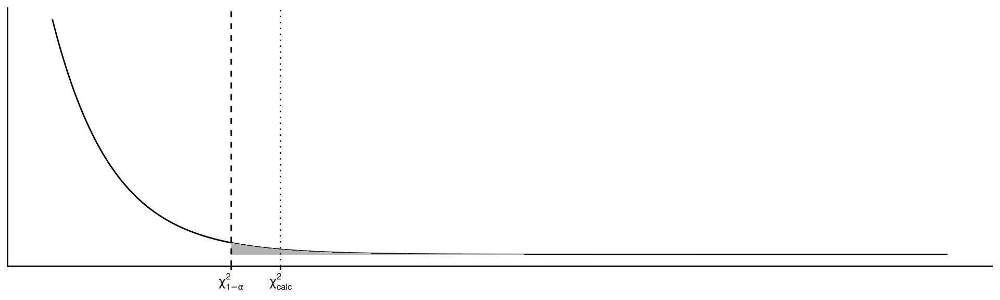
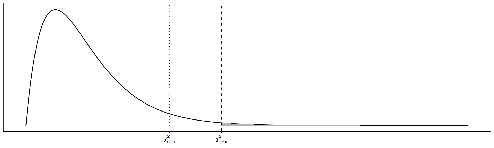
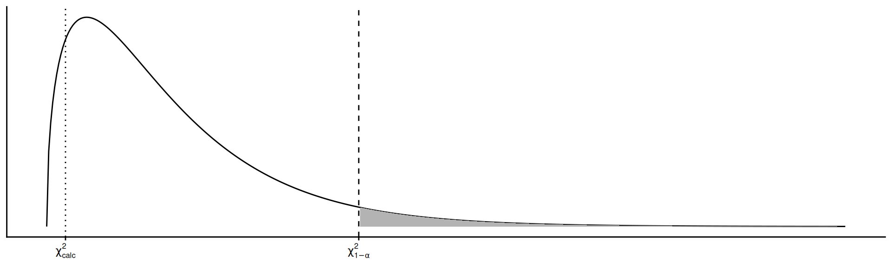

Análisis de datos categóricos
Estadística Básica | 2026
Hoja de ruta
- Pruebas paramétricas vs no paramétricas
- Tabla de contingencia
- Prueba de independencia
- Prueba de homogeneidad
- Tablas 2x2 y corrección de Yates
- Prueba de bondad de ajuste
Introducción
Pruebas no paramétricas
Las pruebas no paramétricas no hacen supuestos sobre el valor de un parámetro poblacional ni sobre la distribución de la población de origen (distribución libre). Se aplican cuando esos supuestos no se cumplen, o cuando la variable respuesta es categórica.
Pruebas chi-cuadrado
- Independencia: ¿dos atributos de una población están asociados?
- Homogeneidad: ¿dos o más poblaciones tienen igual distribución de un atributo?
- Bondad de ajuste: ¿una muestra se ajusta a una distribución teórica dada?
Procedimiento similar en las tres (comparar frecuencias observadas vs esperadas)
\[\chi^2 = \sum\sum { \dfrac{ \left( o_{ij} - e_{ij} \right)^2}{e_{ij}} }\]
varía el muestreo y el razonamiento para calcular las frecuencias esperadas
Tabla de contingencia (\(r \times c\))
| \(A / B\) | \(B_1\) | \(B_2\) | \(\dots\) | \(B_c\) | \(\sum\) |
|---|---|---|---|---|---|
| \(A_1\) | \(n_{11}\) | \(n_{12}\) | \(\dots\) | \(n_{1c}\) | \(n_{1\cdot}\) |
| \(A_2\) | \(n_{21}\) | \(n_{22}\) | \(\dots\) | \(n_{2c}\) | \(n_{2\cdot}\) |
| \(\vdots\) | \(\cdots\) | \(\cdots\) | \(\dots\) | \(\cdots\) | \(\vdots\) |
| \(A_r\) | \(n_{r1}\) | \(n_{r2}\) | \(\dots\) | \(n_{rc}\) | \(n_{r\cdot}\) |
| \(\sum\) | \(n_{\cdot1}\) | \(n_{\cdot2}\) | \(\dots\) | \(n_{\cdot c}\) | \(n_{\cdot\cdot}\) |
- Frecuencias de celda: intersección de un nivel de \(A\) y uno de \(B\) (e.g. \(n_{24}\): fila 2, columna 4)
- Frecuencias marginales: totales de fila o columna (el punto reemplaza al índice que se suma)
Independencia
Características
Prueba si dos atributos (variables) de una población están relacionados o no
Los datos provienen de una muestra simple al azar de tamaño \(n\) extraída de la población
Las observaciones se clasifican en forma cruzada según dos criterios, en una tabla de contingencia \(r \times c\)
Ejemplo (partos)
Para estudiar la relación entre el tipo de parto y el clima en vacas lecheras, se tomó una muestra de 300 vacas y se las clasificó según dichos atributos.
Clima
Tipo cálido frío templado Sum
anormal 28 130 50 208
normal 20 42 30 92
Sum 48 172 80 300¿Se puede afirmar con un 5% de significancia que existe relación entre el tipo de parto y las condiciones climáticas?
Hipótesis y estadístico de prueba
Hipótesis
\(H_0:\) los atributos \(A\) y \(B\) son independientes
\(H_1:\) los atributos \(A\) y \(B\) no son independientes
o bien:
\[H_0: p_{ij} = p_{i\cdot} p_{\cdot j} \\ H_1: p_{ij} \neq p_{i\cdot} p_{\cdot j} \text{ para algún } i,j\]
Estadístico de prueba
Las frecuencias esperadas se calculan asumiendo independencia (\(H_0\)): \(P(A \cap B) = P(A) P(B)\), por lo que cada \(e_{ij}\) es el producto de las probabilidades marginales
\[e_{ij} = n \left[ \dfrac{n_{i \cdot}}{n} \dfrac{n_{\cdot j}}{n} \right] = \dfrac{n_{i \cdot} n_{\cdot j}}{n}\]
\[\chi^2 = \sum_{i=1}^r \sum_{j=1}^c \dfrac{ \left( o_{ij} - e_{ij} \right)^2}{e_{ij}} \sim \chi^2_{(r-1)(c-1)}\]
Si no hay independencia, las diferencias \(o_{ij} - e_{ij}\) son mayores y \(\chi^2\) aumenta
Ejemplo (cont.) — valores esperados
Ejemplo (partos, cont.)
Entonces las hipótesis son:
\(H_0:\) el tipo de parto es independiente del clima
\(H_1:\) el tipo de parto no es independiente del clima
Partimos de la tabla de frecuencias observadas
Clima
Tipo cálido frío templado Sum
anormal 28 130 50 208
normal 20 42 30 92
Sum 48 172 80 300Cada valor esperado es el producto de las probabilidades marginales:
\(e_{ij} = \dfrac{n_{i \cdot} \, n_{\cdot j}}{n}\)
Por ejemplo, para anormal y clima cálido:
\[e_{\text{anormal, cálido}} = \dfrac{208 \times 48}{300} = 33.28\] Y así se completa la matriz de esperados:
| cálido | frío | templado | |
|---|---|---|---|
| anormal | 33.28 | 119.25 | 55.47 |
| normal | 14.72 | 52.75 | 24.53 |
Ejemplo (cont.) — estadístico de prueba
Ejemplo (partos, cont.)
Con los valores observados y esperados, se desarrolla la sumatoria
\[\begin{align} \chi^2 &= \dfrac{(28-33.28)^2}{33.28} + \dfrac{(130-119.25)^2}{119.25} \\ &+ \dots + \dfrac{(30-24.53)^2}{24.53} \\ &= 7.65 \end{align}\]
Usamos R para obtener el valor crítico (de tabla) y el valor p
[1] 5.991465[1] 0.02185675
Conclusión: dado que \(\chi^2_{\text{calc}} = 7.65 > \chi^2_{2;0.05} = 5.99\), se rechaza \(H_0\) (P = 0.0219). El tipo de parto y el clima no son independientes: hay relación entre ambos atributos.
Ejemplo con R
Ejemplo (partos, cont.)
En R, con la función lista:
Conclusión: se rechaza \(H_0\) (P = 0.0219), consistente con el cálculo manual; el tipo de parto y el clima no son independientes.
Homogeneidad
Características
Prueba si dos o más poblaciones son iguales respecto de un atributo
Los datos provienen de \(r\) muestras simples al azar, de tamaño \(n_i\), extraídas de \(r\) poblaciones distintas
Las observaciones se clasifican según un criterio de interés, en una tabla de contingencia \(r \times c\)
Ejemplo (semillas de maíz)
Se quiere saber si la proporción de tamaños de semilla de maíz es similar en 3 partidas. De cada partida se toma una muestra y se clasifica la semilla según su tamaño en chico, normal y grande.
Tamaño
Partida chico grande normal Sum
A 90 70 290 450
B 110 80 300 490
C 60 20 140 220
Sum 260 170 730 1160¿Se puede afirmar con un 1% de significancia que la proporción de semillas chicas, normales y grandes es similar entre las partidas?
Hipótesis y estadístico de prueba
Hipótesis
\(H_0:\) las poblaciones son homogéneas respecto al atributo \(X\)
\(H_1:\) las poblaciones no son homogéneas respecto al atributo \(X\)
o bien:
\[H_0: p_{1j} = p_{2j} = \cdots = p_{rj} \\ H_1: \text{al menos una difiere}\]
Estadístico de prueba
Las frecuencias esperadas se calculan asumiendo homogeneidad (\(H_0\)): \(P(B_j) = p_{\cdot j} = \dfrac{n_{\cdot j}}{n}\), por lo que cada \(e_{ij}\) se calcula usando el mejor estimador de \(p_{\cdot j}\)
\[e_{ij} = n_{i \cdot} \, p_{\cdot j} = n_{i \cdot} \left[ \dfrac{n_{\cdot j}}{n} \right]\]
\[\chi^2 = \sum_{i=1}^r \sum_{j=1}^c \dfrac{ \left( o_{ij} - e_{ij} \right)^2}{e_{ij}} \sim \chi^2_{(r-1)(c-1)}\]
Si no hay homogeneidad, las diferencias \(o_{ij} - e_{ij}\) son mayores y \(\chi^2\) aumenta
Ejemplo (cont.) — valores esperados
Ejemplo (semillas, cont.)
Entonces las hipótesis son:
\(H_0:\) proporción de tamaños es homogenea entre partidas \(H_1:\) proporción de tamaños es no son homogéneas entre partidas
Partimos de la tabla de frecuencias observadas
Tamaño
Partida chico grande normal Sum
A 90 70 290 450
B 110 80 300 490
C 60 20 140 220
Sum 260 170 730 1160Cada valor esperado es el producto de las probabilidades marginales:
\(e_{ij} = n_{i \cdot} \left[ \dfrac{n_{\cdot j}}{n} \right]\).
Por ejemplo, para la partida A y tamaño chico:
\[e_{\text{A, chico}} = 450 \times \dfrac{260}{1160} = 100.86\] Y así se completa la matriz de esperados:
| chico | grande | normal | |
|---|---|---|---|
| A | 100.86 | 65.95 | 283.19 |
| B | 109.83 | 71.81 | 308.36 |
| C | 49.31 | 32.24 | 138.45 |
Ejemplo (cont.) — estadístico de prueba
Ejemplo (semillas, cont.)
Con los valores observados y esperados, se desarrolla la sumatoria
\[\begin{align} \chi^2 &= \dfrac{(90-100.86)^2}{100.86} + \dfrac{(70-65.95)^2}{65.95} \\ &+ \dots + \dfrac{(140-138.45)^2}{138.45} \\ &= 9.73 \end{align}\]
Usamos R para obtener el valor crítico (de tabla) y el valor p
[1] 13.2767[1] 0.04530456
Conclusión: dado que \(\chi^2_{\text{calc}} = 9.73 < \chi^2_{4;0.01} = 13.28\), no se rechaza \(H_0\): la proporción de tamaños de semilla es homogénea entre las tres partidas.
Ejemplo con R
Ejemplo (semillas, cont.)
En R, con la función lista:
Conclusión: no se rechaza \(H_0\) (P = 0.0453), consistente con el cálculo manual; la proporción de tamaños de semilla es homogénea entre partidas.
Tablas 2x2
| \(A / B\) | \(B_1\) | \(B_2\) | \(\sum\) |
|---|---|---|---|
| \(A_1\) | \(a\) | \(b\) | \(a + b\) |
| \(A_2\) | \(c\) | \(d\) | \(c + d\) |
| \(\sum\) | \(a + c\) | \(b + d\) | \(n\) |
\[\chi^2 = \dfrac{n(ad -bc)^2}{(a+c)(b+d)(a+b)(c+d)} \sim \chi^2_{1;\alpha}\]
Corrección por continuidad (Yates)
Al aproximar una distribución discreta con una continua (\(\chi^2\)), se corrige restando 0.5\(n\) al valor absoluto de la diferencia
\[\chi^2 = \dfrac{n\left[|ad -bc|-0{,}5n \right]^2}{(a+c)(b+d)(a+b)(c+d)} \sim \chi^2_{1;\alpha}\]
Ejemplo: corrección por continuidad
Ejemplo (cáncer y tabaquismo)
Se relevó el hábito de fumar y el diagnóstico de cáncer de pulmón en una muestra de 66 pacientes de un hospital.
Fumador
Cancer no si Sum
no 17 8 25
si 18 23 41
Sum 35 31 66
Pearson's Chi-squared test
data: obs_yates
X-squared = 3.6206, df = 1, p-value = 0.05707
Pearson's Chi-squared test with Yates' continuity correction
data: obs_yates
X-squared = 2.7178, df = 1, p-value = 0.09923Conclusión: con y sin corrección, el valor p (0.0571 y 0.0992 respectivamente) es mayor a 0.05: no se rechaza \(H_0\), no hay evidencia suficiente de asociación entre tabaquismo y cáncer en esta muestra.
Bondad de Ajuste
Características
Prueba si una muestra \(x_1, x_2, \dots, x_n\) de una VA \(X\) tiene una función de distribución \(F(X)\) dada
El alejamiento entre lo observado y lo teórico puede deberse al azar (muestreo) o a que la distribución teórica es otra
\(X\) se agrupa en \(r\) clases mutuamente excluyentes
Ejemplo (herencia mendeliana)
En una variedad de arvejas, la textura y el color de la semilla se rigen por caracteres mendelianos: “lisa” y “amarilla” son fenotipos dominantes, “rugosa” y “verde” son recesivos. La proporción teórica de LA, LV, RA y RV es 9:3:3:1. Se clasificaron 556 arvejas según textura (L/R) y color (A/V):
LA LV RA RV Sum
315 108 101 32 556 ¿Con un 5% de significancia, estos datos se ajustan a la distribución teórica 9:3:3:1?
Hipótesis y estadístico de prueba
Hipótesis
\(H_0:\) la distribución teórica se ajusta a los datos \(H_1:\) la distribución teórica no se ajusta a los datos
o bien:
\[H_0: p_1 = \hat{p}_1;\ \dots;\ p_r = \hat{p}_r \\ H_1: \text{al menos una difiere}\]
Estadístico de prueba
Los valores esperados se calculan con la distribución hipotética (\(H_0\)): \(e_i = n \cdot p_i\)
\[\chi^2 = \sum_{i=1}^r \dfrac{(o_i - e_i)^2}{e_i} \sim \chi^2_{r-g-1}\]
donde \(g\) es el número de parámetros de la distribución teórica
Ejemplo (cont.) — valores esperados
Ejemplo (arvejas, cont.)
Entonces las hipótesis son:
\(H_0:\) la distribución teórica 9:3:3:1 se ajusta a los datos
\(H_1:\) la distribución teórica 9:3:3:1 no se ajusta a los datos
Partimos de la tabla de frecuencias observadas
LA LV RA RV
315 108 101 32 Cada valor esperado es el producto del total de observaciones por su probabilidad:
\(e_i = n \cdot p_i\).
Por ejemplo, para el fenotipo LA (liso-amarillo), con \(p_{LA} = 9/16\):
\[e_{LA} = 556 \times \dfrac{9}{16} = 312.75\] Y así se completa el vector de esperados:
| LA | LV | RA | RV |
|---|---|---|---|
| 312.75 | 104.25 | 104.25 | 34.75 |
Ejemplo (cont.) — estadístico de prueba
Ejemplo (arvejas, cont.)
Con los valores observados y esperados, se desarrolla la sumatoria
\[\begin{align} \chi^2 &= \dfrac{(315-312.75)^2}{312.75} + \dfrac{(108-104.25)^2}{104.25} \\ &+ \dots + \dfrac{(32-34.75)^2}{34.75} \\ &= 0.47 \end{align}\]
Usamos R para obtener el valor crítico (de tabla) y el valor p
[1] 7.814728[1] 0.9254259
Conclusión: dado que \(\chi^2_{\text{calc}} = 0.47 < \chi^2_{3;0.05} = 7.81\), no se rechaza \(H_0\): los fenotipos observados se ajustan a la distribución teórica 9:3:3:1.
Ejemplo con R
Ejemplo (arvejas, cont.)
En R, con la función lista:
Conclusión: no se rechaza \(H_0\) (P = 0.9254), consistente con el cálculo manual; los fenotipos observados se ajustan a la distribución teórica 9:3:3:1.
Resumen
| Prueba | Compara | Muestreo | chisq.test() |
|---|---|---|---|
| Independencia | asociación entre 2 atributos de una población | 1 muestra, clasificada por 2 criterios | chisq.test(tabla) |
| Homogeneidad | distribución de 1 atributo entre \(r\) poblaciones | \(r\) muestras, clasificadas por 1 criterio | chisq.test(tabla, p = proporciones) |
| Bondad de ajuste | distribución muestral vs. una teórica | 1 muestra, clasificada en \(r\) clases | chisq.test(x, p = probabilidades) |
En tablas \(2\times 2\), chisq.test(..., correct = TRUE) (por defecto) aplica la corrección de Yates